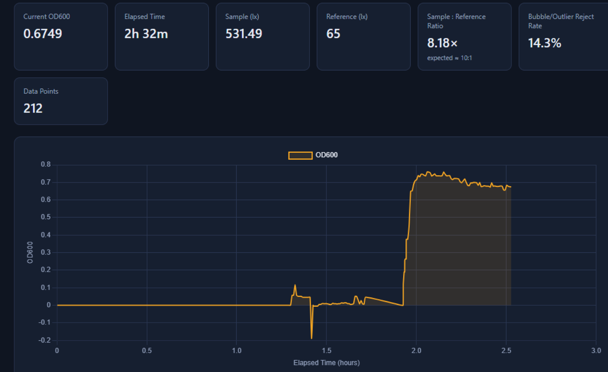

We would like to ask for 60 to 90 minutes of your time. The reactor is not yet fully
assembled and the constitutive ACC deaminase run has not started. That is precisely why we want to
consult you before we build rather than after. This page is what we have done since 18 June, what the
design looks like now, what we must deliver by 21 October, and six questions we would like to ask you
in person.
上圖：2026 年 6 月 18 日，本團隊 47 人中的一部分與張嘉修校長合影，背後螢幕是當天的「General Feedback from Prof. Chang」。Above: 18 June 2026, part of our 47-person team with Prof. Chang; the screen behind carries that day’s “General Feedback from Prof. Chang” slide.
Contents
On this page
1一分鐘摘要The one-minute version
您在 6/18 對生物反應器給了三件事：把測試時間拉長、把硬體的測試範例記錄下來、
做一個測試用的操作介面。這 64 天我們做的五件事，全部落在這三件上。On 18 June you gave the reactor three instructions: expand the testing time,
record example tests of the hardware, and make a UI for reactor testing. The five things we
have done in these 64 days all land on those three.
圖 1.Figure 1.2026-06-18，校長在會議中就反應器設計提出建議。當天的討論涵蓋光調控、數學模型、protectant、植物模型、水耕、基因線路、反應器、突變設計與密碼子最佳化九個題目。18 June 2026, Prof. Chang advising on the reactor design. The session covered nine topics: light control, the mathematical model, the protectant, the plant model, hydroponics, the genetic circuit, the reactor, mutation design and codon optimisation.
2.1 您對反應器提的三件事2.1 The three things you asked of the reactor
您當天對反應器只講了三句話。我們把這 64 天的五項工作對回這三句，一項一項附上證據。
You said three things about the reactor that day. Below, the five pieces of work from these 64 days
are mapped back onto them, each with its evidence.
您在 6/18 說的What you said
我們做的事What we did
證據Evidence
狀態Status
Expand testing time
22 °C 下連續培養 B. subtilis 168 共 20 天，全程由線上光度計連續記錄，沒有人工取樣造成的中斷。此前最長的紀錄是以 30 分鐘為間隔的數小時試驗。A 20-day continuous culture of B. subtilis 168 at 22 °C, logged end-to-end by the in-line photometer with no sampling interruptions. The previous longest record was a few hours at 30-minute intervals.
壓力變送器與流速計都各自做了脫離反應器的獨立測試，並留下數據；更換後的 200 cm² 中空纖維膜模組規格完整登錄，包含它取代掉的舊規格。The pressure transducer and the flow meter were each tested standalone, off the reactor, with the data kept; the replacement 200 cm² hollow-fibre module is fully specified, including the record it supersedes.
三個監測介面：壓力、流速、菌體濃度。操作者現在可以在不拆機、不取樣的狀況下看到反應器正在發生什麼事。Three monitoring interfaces: pressure, flow, and cell density. An operator can now see what the reactor is doing without opening it or pulling a sample.
Growth curve / density → input to hardware (您在基因線路那段提的raised under the genetic circuit)
線上分光光度計的讀值已經是硬體迴路裡的即時輸入，不再只是事後畫的圖。8/1 它偵測到蠕動泵停止運轉 —— 我們自製的光度計抓到了它所監測的反應器發生硬體故障。The in-line photometer’s reading is now a live input inside the hardware loop, not a plot drawn afterwards. On 1 August it caught the peristaltic pump dying — our own photometer detected a hardware failure in the reactor it monitors.
You covered far more than the reactor. The table below is the complete record of all nine topics
and where each subteam now stands — including what we have not started, what we have not verified, and
what you raised that we still cannot answer.
題目Topic
您提的重點What you raised
現況Where it stands
狀態Status
光調控Light control
藍光系統的啟動子比較強，需要進一步查證與驗證。The blue-light system has a stronger promoter; needs further research and verification.
尚未做藍光 / 綠光的並列比較。目前仍沿用綠光 CcaS–CcaR，理由是 Castillo-Hair 等人 2019 已量測到我們需要的完整參數（Hill n = 1.88 ± 0.16、K½ = 4.66 ± 0.63 µmol m⁻² s⁻¹ @ 526 nm、t½ON = 105.1 min、t½OFF = 74.97 min），可以直接進數學模型。這是選擇的理由，不是驗證。No side-by-side blue/green comparison has been run. We still use green CcaS–CcaR because Castillo-Hair et al. 2019 measured every parameter our model needs (Hill n = 1.88 ± 0.16, K½ = 4.66 ± 0.63 µmol m⁻² s⁻¹ at 526 nm, t½ON = 105.1 min, t½OFF = 74.97 min). That is a reason for the choice, not a verification.
未驗證Unverified
數學模型Mathematical model
植物接收 protectant 的延遲時間要有實驗回饋迴路驗證；把生物面與物理面（土壤物理特質）接起來；輸入與輸出都要收集得到、界定清楚；把模型做成可替換化合物的平台，考慮農業防災資料庫。The delay before a plant receives the protectant needs a feedback loop with experiments; connect the biology to the physics (soil physical properties); make sure both input and output are collectable and clearly identified; build the model as a platform where the compound is interchangeable, with an agricultural-disaster database in view.
Math model 組填：三層模型（生長 / CcaSR / 分泌與 TFF 遞送）目前到哪，土壤擴散那一段接上了沒有，以及「平台化」有沒有具體做法。
待team確認To confirm
Protectant
生物安全：His-tag 可能被視為「外來」；若最終產物不含 His-tag，數學模型可能要重做。Biosafety: a His-tag may be read as foreign; if the final product does not carry the His-tag, the model may have to be redone.
Wetlab 填：最終產物含不含 His-tag、若不含，模型的哪一段參數要重取。
待team確認To confirm
植物模型Plant model
與數學模型協作定鹽劑量；濃度與時間兩軸一起變；查文獻找 trehalose 濃度、時間、鹽濃度的最佳組合；建議改變 NaCl 劑量而不是 trehalose 劑量；過量的水會限制氧氣而影響根生長。Work with the model on salt dosage; vary both concentration and time; find papers on the optimal trehalose concentration, time frame and salinity; vary NaCl dose rather than trehalose dose; excess water limits oxygen and affects root growth.
Plant 組填：鹽濃度梯度與時間點怎麼定的、文獻找到哪幾篇、有沒有照您說的改成變 NaCl。
待team確認To confirm
水耕系統Hydroponics
自動補液迴路讓條件恆定；三通法分三種情況（穩定則循環、補營養、換掉污染的液）；生物感測器監測含氧量；以氣泡與奈米氣泡供氧；輸出端分析培養液對應到反應。並建議我們去參訪源鮮。A self-filling loop to keep conditions stable; a three-way split (recycle when stable, refill nutrient, replace contaminated medium); a biosensor for dissolved oxygen; aeration by bubbles and nanobubbles; analyse the outlet medium against the response. You also suggested we visit YesHealth.
源鮮已於 8/11 拜訪。溶氧與 pH 感測器 8/5 開始測試（見下方照片）。三通自動補液迴路尚未建置。We visited YesHealth on 11 August. DO and pH sensors entered testing on 5 August (photo below). The three-way self-filling loop is not built.
部分完成Partly done
基因線路Genetic circuit
組成型啟動子持續表現兩個蛋白，過量生產會造成菌自身的內部逆境 —— 是內部干擾而不是外部環境逆境；綠光還是藍光哪個有效；生長曲線 / 菌體密度要餵給硬體。A constitutive promoter expressing both proteins continuously causes internal stress in the cell — internal interference rather than external environmental stress; green or blue; growth curve and density feed the hardware.
生長曲線已成為硬體的即時輸入（見 2.1）。內部逆境這一點正是我們現在想用 CRISPRi 抑制 dnaA 來控制生長的原因，也是問題 3。The growth curve is now a live hardware input (see 2.1). The internal-stress point is exactly why we are now considering CRISPRi knockdown of dnaA to control growth, which is Question 3.
進行中In progress
生物反應器Bioreactor
拉長測試時間；記錄硬體的測試範例；做測試用的操作介面。Expand testing time; record example tests of hardware; make a UI for reactor testing.
用生成式 AI 產生胜肽、把資料餵進模型；理解胜肽特性、點突變、建資料庫做訓練；胜肽會降解，小分子化合物降解較慢。Use generative AI to produce peptides and feed data into the model; understand peptide properties, point mutations, database and training; peptides decay, small compounds decay more slowly.
也可以用資料訓練來取得更好的結果。Data training could also be used here for better results.
Drylab 填：ViennaRNA / NUPACK 目前的做法，以及有沒有導入資料訓練。
待team確認To confirm
圖 2.Figure 2.2026-08-05，溶氧與 pH 感測器開始測試 —— 對應您在水耕那段提到的「以生物感測器監測含氧量」。5 August 2026, dissolved-oxygen and pH sensors entering testing, following your hydroponics note on monitoring oxygen with a biosensor.
3五件工作，逐件附證據Five pieces of work, each with its evidence
The five cards share one format so they can be compared side by side. Each carries a field called
“known error and artefacts”: what this instrument still cannot be trusted about.
01
22 °C、20 天的 B. subtilis 168 生長曲線A 20-day growth curve of B. subtilis 168 at 22 °C
On 10 June we got a negative result: the cells barely grew inside the hollow-fibre lumen.
The flask control that day rose monotonically from OD 0.172 to 0.377, while ten timepoints inside the
lumen oscillated between 0.10 and 0.19 with no net growth. That negative result is the founding problem
of the whole device. Deciding between “it does not grow” and “it grows slowly and we did
not watch long enough” requires a longer observation — which is the first thing you asked for.
待填 圖 3 · 20 天生長曲線尚未繪製。需要：時間軸標註、8/1 泵故障事件、BioDrop 對照點。Figure 3 · the 20-day curve is not plotted yet. Needs: annotated time axis, the 1 August pump-failure event, BioDrop cross-check points.
圖 3.Figure 3.22 °C 下 20 天的 B. subtilis 168 生長曲線，由線上光度計連續記錄。Twenty days of B. subtilis 168 at 22 °C, logged continuously by the in-line photometer.圖 4.Figure 4.2026-08-03，長時間生長試驗的實際配置：反應器、線上光度計與植物同在一個培養箱內。3 August 2026, the long-run set-up: reactor, in-line photometer and plants sharing one incubator.
Three anomalies appeared in the three-week record and we can explain only one.
27 July: no exponential phase, a monotonically falling growth rate, no plateau.
29 July: the reading rebounded higher; not an oscillation; the working hypothesis is waste
accumulation. 1 August: a sharp terminal drop — this one is resolved, the peristaltic pump had
died. The first two remain unattributed.
A root-cause experiment on the lumen no-growth. Four candidates are listed and none has been
isolated yet: oxygen limitation in the lumen, no fed-batch nutrient supply at fixed volume, shear, and the
optical or thermal difference at 22 °C. This is Question 1.
02
中空纖維膜模組換成 200 cm²The hollow-fibre module moved to 200 cm²
Membrane area sets the operating flux. Our scale-up holds wall shear rate γ̇w and
operating flux J constant and adds throughput by adding area (see 4.3), so area is
the one quantity we move — and therefore the one that has to be recorded in full.
When the spec was frozen on 4 July we corrected two of our own earlier errors and list them
here as they stand. The old record said “50 kDa MWCO”; that is wrong, the module is 0.2 µm
microfiltration, not ultrafiltration. And the earlier claim that it “blocks OMVs” is also wrong:
at 0.2 µm, ACC deaminase (~36 kDa) passes, but so do small outer-membrane vesicles and cell debris.
This bears directly on containment.
03
跨膜壓力量測與監測介面Transmembrane pressure sensing and interface
Transmembrane pressure is the first signal of fouling and the only measurement of how much
margin is left against the module’s 0.25 MPa rating. Without it the state of the membrane is a guess.
規格Specification
型號Model
BP8G-AGA
量程Range
0–1 MPa 錶壓0–1 MPa gauge
輸出 / 供電Output / supply
三線 0–5 V · 24 VDC3-wire 0–5 V · 24 VDC
綜合精度Combined accuracy
1.0 % FS
非線性Nonlinearity
0.25 %
重複性Repeatability
0.1 %
遲滯Hysteresis
0.2 %
溫漂Temperature drift
0.03 % / °C
螺紋 / 接頭Thread / connector
G1/4 · GX12-3 · IP54
讀取Acquisition
Arduino Uno R4，14-bit ADC，3.3 V 邏輯，需分壓電路Arduino Uno R4, 14-bit ADC, 3.3 V logic, voltage divider required
韌體Firmware
Pressure_sensor_v0.26
獨立測試Standalone test
填：脫離反應器的獨立測試怎麼做的（施加已知壓力的方式、比對基準、量測點數、上下行程各幾點），以及結果 —— 線性度、重複性、與標稱值的偏差。這是您說的「record example tests」的核心那一格。
圖 5.Figure 5.2026-07-12，第一次把壓力感測器接上 Arduino 並在電腦上看到即時數據。12 July 2026, the first live pressure reading on screen.圖 6.Figure 6.2026-08-13，壓力感測器在反應器上的測試。13 August 2026, pressure sensor under test on the reactor.
已知誤差與人工假象Known error and artefacts
跨膜壓力訊號上疊著蠕動泵的脈動。這一點已經由本團隊的 Dr. Pak K. Yuet 確認過原因，
不是不明來源的雜訊。目前我們把它當成已知的量測假象處理，尚未做濾波或以泵轉速做同步扣除。
The pressure trace carries the peristaltic pump’s pulsation. Dr. Pak K. Yuet confirmed the
cause, so it is a documented artefact rather than unexplained noise. We currently treat it as known and
have not yet filtered it or subtracted it synchronously against pump speed.
04
流速計與流速監測介面Flow meter and flow-monitoring interface
Cross-flow sets the wall shear rate γ̇w = 32Q₁/(πdi³), and γ̇w
is the one quantity our entire scale-up refuses to let move. Without measuring flow there is no shear rate,
and the scale-up argument has nothing to stand on. The cross-flow pump is a 雷熔 ZP4000-N79H peristaltic,
230–2600 mL/min.
線上分光光度計與菌體生長監測介面In-line spectrophotometer and growth interface
Make UI
為什麼需要它Why
這件事起於 5 月 16 日的一句話：「我們需要能測流速，也能測有多少 B. sub。」
在一個要連續運轉、而且將來要交到農民手上的裝置裡，靠取樣送桌上型分光光度計是不成立的操作方式。
This began with one line on 16 May: “we need to measure flow rate, and how much
B. subtilis.” In a device meant to run continuously — and eventually to be handed to a
farmer — pulling samples to a benchtop spectrophotometer is not a workable operation.
光路與規格Optical path and specification
流通比色管Flow cuvette
光程 2 mm · 孔徑 4 mm · 全長 76 mm2 mm path · 4 mm bore · 76 mm
透鏡Lens
合成石英平凸，⌀12.7 mm，f = 40 mm，後焦 37.9 mm，ne = 1.460 @ 546.1 nm，未鍍膜（透過率約 90 %），刮痕–挖痕 20-10Synthetic quartz plano-convex, ⌀12.7 mm, f = 40 mm, back focus 37.9 mm, ne = 1.460 at 546.1 nm, uncoated (~90 % transmittance), scratch-dig 20-10
量測Measurand
OD600
韌體Firmware
od600_monitor_6 → od600_monitor_7
操作模式Operating mode
Developer Mode：LED 持續點亮並連續讀值，操作者可即時調整 Sample : Reference 比並校正光路Developer Mode: LED held on with continuous read-out so the operator can adjust the sample-to-reference ratio and align the light path live
校正過程（照實寫，包含錯的那一段）Calibration, including the part we got wrong
One full cycle inside a single day, 19 July. 18:41, the first sensible reading.
19:06, we found it was overestimating roughly fourfold. 19:07, a hypothesis: the blank, because the
flow cuvette cannot be cleaned before blanking. 20:35, a proposed fix — let the operator enter the
blank manually. 20:54, implemented: 0.100 against BioDrop’s 0.149. No longer 4× high;
now slightly low.
圖 7.Figure 7.2026-07-19，線上分光光度計第一次讀到合理的即時菌體數據。19 July 2026, the in-line photometer’s first sensible live reading.

圖 8.Figure 8.同一天稍晚，我們自己發現讀值比 BioDrop 高估約 4 倍。這張截圖留著，因為它是修正的起點。Later the same day: the reading was about 4× higher than BioDrop. We keep this screenshot because it is where the correction started.
Two named failure modes: bubbles in the flow path, which make the reading jump
violently, and tolerance stack-up in the early optical mount. Beyond that, we have a single
comparison point against BioDrop (0.100 vs 0.149) and no linearity curve, no limit of detection and no
repeatability figure. That is this instrument’s largest gap.
On 1 August the continuous log showed a sharp terminal drop. The students’ first
hypothesis was contamination; the actual cause was that the peristaltic pump had died, and it was replaced.
Our own photometer detected a hardware failure in the reactor it monitors. That is the strongest
utility claim this instrument has.
下一步Next
以稀釋序列做線性範圍、偵測極限與重複性曲線，並在整個 OD 範圍上與 BioDrop 交叉驗證。
8 月 15 日已經開始新一輪的校正曲線試驗。
A dilution series for linearity, limit of detection and repeatability, cross-validated against
BioDrop across the OD range. A new calibration run began on 15 August.
4目前的設計The design as it stands
圖 9.Figure 9.2026-08-04 的完整系統設計。灌流式中空纖維膜（TFF）反應器，內含以光遺傳學控制的 B. subtilis 168；
520 nm 綠光經 CcaS–CcaR 觸發 protectant 合成，0.2 µm 膜截留菌體，permeate 帶出 protectant。The full system as of 4 August 2026. A perfusion hollow-fibre (TFF) reactor housing optogenetically
controlled B. subtilis 168; 520 nm green light drives protectant synthesis through CcaS–CcaR, the
0.2 µm membrane retains the cells, and the permeate carries the protectant out.
4.1 操作點4.1 The operating point
這張表是我們希望您看的第一組數字。空著的欄位代表我們還沒有算或還沒有量到 —— 沒有填空數。
This table is the first set of numbers we would like you to look at. Blank cells mean we have not
calculated or measured it yet; nothing here is filled in with a guess.
量Quantity
符號Symbol
目前值Current value
為什麼盯著它Why we watch it
膜面積Membrane area
Am
200 cm²
處理量隨面積線性放大Throughput scales linearly with area
壁面剪切率Wall shear rate
γ̇w
待填
積垢與濃度極化的主控變數，放大時固定不動The master variable for fouling and polarisation; held constant on scale-up
操作通量Operating flux
J = Qp/Am
待填
必須低於臨界通量 Jcrit，餘裕要能說出百分比Must sit below the critical flux Jcrit, with a stated margin
臨界通量Critical flux
Jcrit
待填
Field 等人的臨界通量理論；隨剪切率上升Field et al.; rises with wall shear
雷諾數Reynolds number
Re
待填
確認仍在層流帶（< 2100），Hagen–Poiseuille 才成立Confirms laminar (< 2100) so Hagen–Poiseuille holds
灌流培養的生物端放大不變量The biology-side scaling invariant for perfusion
這些量之間怎麼互相牽制，我們做了一個可調參數的互動頁面：
Bioreactor Invariant Explorer（十個參數，即時顯示各指標的競爭關係），
建立在 Dr. Pak 的 Bioreactor Design Invariants 之上。
How these quantities pull against each other is laid out in an interactive page we built —
the Bioreactor Invariant Explorer, ten parameters with the competing indices shown live —
on top of Dr. Pak’s Bioreactor Design Invariants.
4.2 放大：我們固定什麼、放棄什麼4.2 Scale-up: what we hold and what we give up
文獻依據三篇：van Reis 等人 1997 的線性放大（固定幾何與剪切、只放大面積，做到 400 倍且不經中試）；
Field 等人 1995 的臨界通量概念（微濾細胞懸浮液，正是我們的操作區間）；
以及 van Reis 與 Zydney 2007 的生物製程膜技術回顧，其中記載了一個
0.2 µm 中空纖維微濾收穫放大到 174 m²、在壁面剪切 4000 s⁻¹ 與通量 50 LMH 下運轉的實例，
我們拿它當自己操作點的合理性錨點。
Three papers carry the argument: van Reis et al. 1997 on linear scale-up (fix geometry and shear,
scale only area — 400-fold with no pilot stage); Field et al. 1995 on critical flux (microfiltration of cell
suspensions, our exact regime); and van Reis & Zydney 2007, the bioprocess membrane review, which documents a
0.2 µm hollow-fibre harvest scaled to 174 m² at 4000 s⁻¹ wall shear and 50 LMH — a published operating point
we use as a sanity anchor for our own.
4.3 生物防護：第一層有了，第二層還沒有4.3 Containment: the first barrier exists, the second does not
第一層是尺寸排阻：B. subtilis 約 1–2 µm，0.2 µm 的膜完全截留。
第二層還不存在。7 月 16 日指導老師提出「就算 B. sub 穿過中空纖維膜，我們還是要有東西接住它」，
到今天為止沒有設計被記錄下來。這是一個公開承認的未解問題，也是我們想請您看的
第一個問題的一部分。
The first barrier is size exclusion: B. subtilis is 1–2 µm and the 0.2 µm membrane
retains it completely. The second barrier does not exist. On 16 July our instructors said that even if
B. subtilis got through the hollow fibre, something has to catch it — and no design has been recorded
since. This is an openly unresolved problem and part of Question 1.
5正在組裝的商業化版本The commercial unit now being assembled
The research prototype exists to answer questions; the commercial unit exists to be handed to
somebody else. They are held to different requirements, so we put them side by side. Most of the right-hand
column is still empty, and that is exactly what we would like your eye on.
膜截留（第一層）；第二層未設計Membrane retention only; no second barrier
待填
圖 10.Figure 10.2026-08-15，學生與指導老師討論下一代反應器腔體的設計。15 August 2026, students and instructors working through the next reactor chamber design.
6到 10 月 21 日的里程碑Milestones to 21 October
iGEM 的 Biomanufacturing village 在巴黎。我們把每一項里程碑寫成可驗收條件，
而不是動詞短語 —— 條件沒達到就是沒達到，我們不會事後改口徑。每一軌都配一條 fallback。
The Biomanufacturing village meets in Paris. Every milestone below is written as an
acceptance criterion rather than a verb phrase: if the criterion is not met, it is not met, and we will not
move the goalposts afterwards. Each track carries a fallback.
8/22 – 8/31
A 軌 · 反應器硬體Track A · Reactor hardware
200 cm² 模組上機、完成無菌填裝流程書面化、第二層生物防護提出設計方案。
Fit the 200 cm² module, write down the aseptic fill procedure, and put forward a design for the second containment barrier.
驗收條件：Acceptance:填裝流程有一份任何組員照著做都能重現的書面 SOP；第二層防護有一個具名的方案與它擋得住什麼的說明。A written SOP any team member can follow to reproduce the fill; a named second-barrier proposal with a statement of what it actually stops.
9/1 – 9/14
B 軌 · 量測與校正Track B · Measurement and calibration
線上光度計的稀釋序列校正：線性範圍、偵測極限、重複性，並在整個 OD 範圍與 BioDrop 交叉驗證。
Dilution-series calibration of the in-line photometer: linear range, limit of detection, repeatability, cross-validated against BioDrop across the OD range.
驗收條件：Acceptance:一條涵蓋 待填 至 待填 OD 的校正曲線，附殘差圖、R²、重複量測的標準差，n ≥ 3。這是 Best Measurement 唯一缺的那一塊。A calibration curve spanning OD TBD to TBD with residuals, R², and the standard deviation of repeated measurements, n ≥ 3. This is the one piece missing for a Best Measurement claim.
9/1 – 9/28
C 軌 · 濕實驗Track C · Wet lab
ACC deaminase 在 B. subtilis 168 內組成型表現，並在 permeate 側測到活性。
Constitutive expression of ACC deaminase in B. subtilis 168, with activity detected on the permeate side.
驗收條件：Acceptance:permeate 側測得的 ACC deaminase 活性 ≥ 待填，對照組為未轉型菌株，n = 3。ACC deaminase activity on the permeate side ≥ TBD, against an untransformed control, n = 3.
9/15 – 10/5
A 軌 · 整機連續運轉Track A · Full-system continuous run
光遺傳學控制接上：以綠光觸發、紅光關閉，全程由三個監測介面記錄。
Optogenetic control in the loop: green on, red off, logged end-to-end by the three monitoring interfaces.
驗收條件：Acceptance:一次 ≥ 待填 天的連續運轉，過程中壓力、流速、OD 三條曲線完整無中斷，且光照切換與蛋白產出的時間關係可在同一張圖上看出來。A single run of ≥ TBD days with unbroken pressure, flow and OD traces, and the timing between light switching and product appearance legible on one plot.
10/6 – 10/21
D 軌 · Wiki 與文件Track D · Wiki and documentation
硬體、量測、整合式人類實踐三份特殊獎項的文件定稿；工程紀錄簿的 DBTL 循環補齊。
Final documentation for the Hardware, Measurement and Integrated Human Practices nominations; the DBTL cycles completed in the engineering notebook.
驗收條件：Acceptance:每一個數字在 wiki 上都連得到它的原始資料與量測方法；沒有任何一句宣稱是形容詞。Every number on the wiki links to its raw data and its method; no claim rests on an adjective.
6.1 10/21 我們希望拿得出手的三件事6.1 The three things we want to be able to show on 21 October
一台會自己講話的反應器。壓力、流速、菌體濃度三條連續曲線，加上一次它自己抓到硬體故障的紀錄。
一條經得起檢驗的校正曲線。自製儀器對商用儀器，全範圍、附殘差與重複性。
一條從逆境到蛋白的完整因果鏈。光照切換與 permeate 側活性出現的時間關係，在同一張圖上。
A reactor that reports on itself. Three continuous traces — pressure, flow, cell density — plus the record of it catching a hardware failure on its own.
A calibration curve that survives inspection. Our instrument against a commercial one, full range, with residuals and repeatability.
One unbroken causal chain from stress to protein. Light switching and permeate-side activity, on the same plot.
7六個想當面請教您的問題Six questions we would like to ask you
Two things worry us. First, the 10 June negative result — no growth in the lumen
— still has no root-cause experiment; the candidates are oxygen limitation, no fed-batch nutrient supply,
shear, and the environment at 22 °C, and we do not know which to isolate first. Second, there is no second
containment barrier, and a 0.2 µm membrane that passes ACC deaminase (~36 kDa) also passes small OMVs and cell
debris.
您的答案會改變什麼：What it changes:決定 8/22–8/31 那一週我們先拆哪一個變因，以及第二層防護要不要進到商業化版本的設計裡。Which variable we isolate first in the week of 22–31 August, and whether the second barrier enters the commercial unit’s design now or later.
Q2
實際運轉中的反應器，無菌填裝怎麼做？運行中怎麼顧？結束之後怎麼清洗、怎麼進到下一次使用？
How is a working reactor filled aseptically, tended during a run, and cleaned for the next one?
This is the part we can least find in writing and are least confident about. Today it is
students working step by step at a laminar-flow hood, with no notion of CIP or SIP, and no clear line on when a
membrane module should be regenerated versus simply replaced. If it is at all possible, what we would most
like is to see a real reactor running — academic or industrial. One visit beats ten papers.
您的答案會改變什麼：What it changes:直接寫進 8 月底那份填裝 SOP，也決定商業化版本的耗材更換週期怎麼定。It goes straight into the end-of-August fill SOP, and sets how we define the commercial unit’s change-out interval.
Q3
兩個我們還沒開始、但想加進去的概念，可行嗎？
Two concepts we have not started but want to add — are they viable?
(a) CRISPRi knockdown of dnaA to control B. subtilis growth.
This comes directly from what you said on 18 June about the genetic circuit: a constitutive promoter expressing
both proteins continuously puts the cell under internal stress. If growth itself becomes a tunable quantity, we
can separate growing cells from making protein — two things that compete for the same resources. (b) Translation coupling a chromoprotein downstream of the protectant, read live by the in-line
photometer. The instrument already in the loop would then report both cell density and protein output, with no
second detection system.
您的答案會改變什麼：What it changes:決定這兩項是列為明年的方向，還是現在就值得排進 9 月的實驗。Whether these are next year’s direction or worth putting into September’s bench schedule now.
B 組 · 產業化與放大Group B · Industrialisation and scale
Q4
我們的放大策略是複製固定幾何的模組。實務上，這條路會先撞到哪一面牆？
Our scale-up plan is to replicate fixed-geometry modules. In practice, which wall do we hit first?
Our statement is: hold γ̇w and J, add area by replicating modules
(van Reis linear scaling), sacrifice whole-system geometric similarity. On paper it works. What we have no
instinct for is what happens when the module count goes from 1 to 10 to 100 — what actually jams first:
consumable cost, the labour of aseptic operation, control-system complexity, or something we have not thought
of at all?
您的答案會改變什麼：What it changes:決定商業化單元該往「一台大的」還是「很多台小的」走，這個決定現在就要下。Whether the commercial unit goes towards one large machine or many small ones — a decision we have to make now.
Q5
這一類裝置的成本結構，大頭在哪裡？學生團隊最容易低估的是哪一項？
Where does the cost actually sit in a device like this, and what do student teams most often underestimate?
Our instinct says the membrane module and the pumps. But we know that instinct only
covers things you can buy. The labour of aseptic operation, downtime, change-out frequency, and the simple fact
that somebody has to watch it run — none of that is in our cost model. Our intended user farms around half
a hectare, and that scale has very little tolerance for unit cost.
您的答案會改變什麼：What it changes:決定商業化單元的規格取捨從哪一端開始砍。Which end of the commercial unit’s specification we start cutting from.
Q6
一台裝著基因改造微生物的裝置要進到田間，在台灣要走什麼路？客戶端應該是誰？
What is the path for a device containing a genetically modified organism to reach a field in Taiwan, and who is the customer?
We have visited farmers and YesHealth, and done a first pass on the regulatory
landscape, but our understanding of what it actually takes to put a GMO-containing device at the edge of a field
is still shallow. Nor have we settled whether this should be sold to farmers, to a co-operative, to an agritech
company, or not sold at all.
您的答案會改變什麼：What it changes:直接寫進我們的 Entrepreneurship 與 Laws & Regulations 兩頁，也決定商業化版本要為誰而設計。It goes into our Entrepreneurship and Laws & Regulations pages, and decides who the commercial unit is designed for.
We had planned to come only after the reactor was assembled and the constitutive ACC deaminase run
was done. But there are unknowns there and it may slip again. Rather than arrive with finished work to report,
we would like to consult you before we build — while your view can still change what we do next.
希望的時間When
8 月 22 日之後，您方便的任何時段 — 待填：列 3–4 個具體時段Any time after 22 August that suits you — TBD: list 3–4 concrete slots
需要的時間Duration
60 至 90 分鐘60 to 90 minutes
出席人數Who would come
待填
地點Where
依您方便；若能到您的實驗室，我們也很想看看實際運轉中的反應器Wherever suits you; if we could come to your laboratory, we would very much like to see a reactor actually running
我們可以帶We can bring
反應器實體、三個監測介面的即時展示、原始數據The reactor itself, a live demonstration of the three monitoring interfaces, and the raw data
聯絡Contact
待填
8附錄Appendix
底下是這一頁引用到的東西的完整版本。連結待填的部分要在寄出前補上網址。
The full versions of what this page draws on. The links marked TBD need
their URLs before this is sent.
Bioreactor Invariant Explorer
十個參數的互動頁面，即時顯示各個設計不變量之間的競爭關係。待填連結
An interactive page: ten parameters, with the competing design invariants shown live. TBD link
TFF 放大論述與計算計畫TFF scale-up statement and plan
第 4.2 節那段論證的完整版本，含三篇主要文獻與計算步驟。待填連結
The full version of the argument in 4.2, with the three key papers and the calculation plan. TBD link
硬體 24 週工程時間軸24-week hardware timeline
反應器、光度計、光照板三台儀器自 3 月以來的完整 DBTL 紀錄。待填連結
The complete DBTL record of all three instruments since March. TBD link
ReLeaf wiki
團隊的完整 wiki。待填連結
The team’s full wiki. TBD link
引用文獻References
van Reis, R., Goodrich, E.M., Yson, C.L., Frautschy, L.N., Dzengeleski, S., & Lutz, H. (1997). Linear scale ultrafiltration. Biotechnology and Bioengineering 55(5): 737–746.
Field, R.W., Wu, D., Howell, J.A., & Gupta, B.B. (1995). Critical flux concept for microfiltration fouling. Journal of Membrane Science 100(3): 259–272.
van Reis, R., & Zydney, A. (2007). Bioprocess membrane technology. Journal of Membrane Science 297(1–2): 16–50.
Castillo-Hair, S.M., et al. (2019). Optogenetic characterization of the CcaS–CcaR system. （Hill n、K½、t½ 參數來源，待補完整書目）(source of the Hill n, K½ and t½ parameters, full citation TBD)
Yeh, M.-S., Wei, Y.-H., & Chang, J.-S. (2006). Enhanced production of surfactin from Bacillus subtilis by addition of solid carriers. Process Biochemistry 41: 1799–1805.